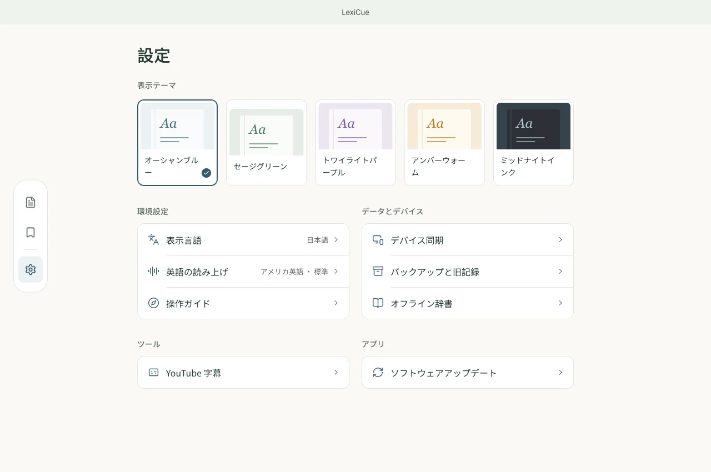
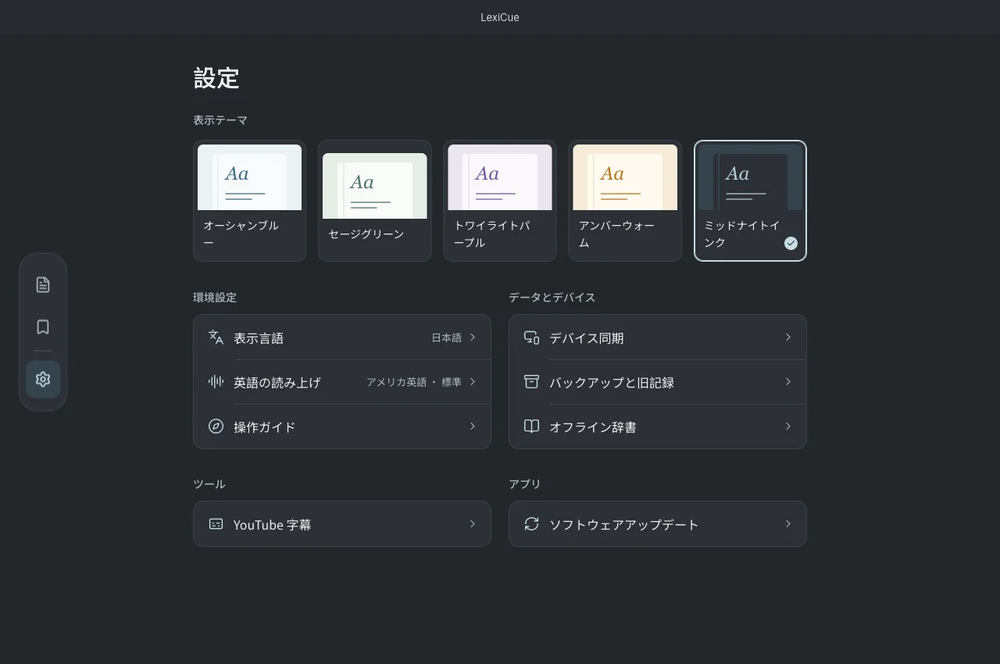

設定
Mac と iPhone は4つの設定グループを共有し、操作は環境に応じて変わります。
このページの目次
表示と環境設定
表示言語は英語・中国語・日本語・ドイツ語。学習対象は英語のままです。設定の最初の画面で5つのテーマを選び、文字サイズは読書画面で調整します。
環境設定には、読み上げの設定と初回ガイドの再表示もあります。



Mac と iPhone をペアリング
- Mac 1台と iPhone 1台を互いに通信できるローカルネットワークに接続し、両方で設定のデバイス同期を開きます。ローカルネットワークと、iPhoneのカメラを許可します。
- Macの期限付きQRコードをiPhoneで読み、両方の端末名とコードを照合します。両方で確認すると信頼が確立され、2つのローカルライブラリを統合します。
同期範囲と復元
本文、文分割と時刻、既存の中国語訳、保存文脈、メモ、タグ、読書位置とその編集・削除を交換します。元のメディアと端末設定は各端末に残り、Windows・Androidはこの同期に非対応です。
初回統合前に両端末で復元用バックアップを作成します。オフライン編集は再接続後に交換し、iPhoneは前面で使います。Macはウィンドウを閉じた後も受信できます。スリープや分離ネットワークは接続を妨げます。
必要ならデバイス同期で保管された別の編集を確認します。端末を削除すると信頼を取り消しますが、ローカルデータは残ります。端末管理から統合前バックアップを復元でき、同期は自分のバックアップの代わりにはなりません。
データ：バックアップと辞書
バックアップから書き出し・復元・履歴へ進めます。辞書ではローカルLongmanと音声の状態を確認し、利用できないときに再試行できます。オンライン辞書には通信が必要です。
辞書の語義
現在の辞書結果への参照を残せます。参照であり、この文の意味を確定するものではありません。辞書項目がなくても、自分の説明を保存できます。
ツール：字幕
デスクトップはブラウザセッションと依存ツール診断、iPhoneは公開英語字幕とキャッシュ削除を提供します。以前のデスクトップ設定でiPhoneが認証付き取得をできるわけではありません。
アプリ：ソフトウェア更新
アプリのソフトウェア更新を開きます。Macは更新を確認でき、ローカル導入のiPhoneはバージョン・導入方法・更新案内を表示します。App Storeや一般公開を意味しません。